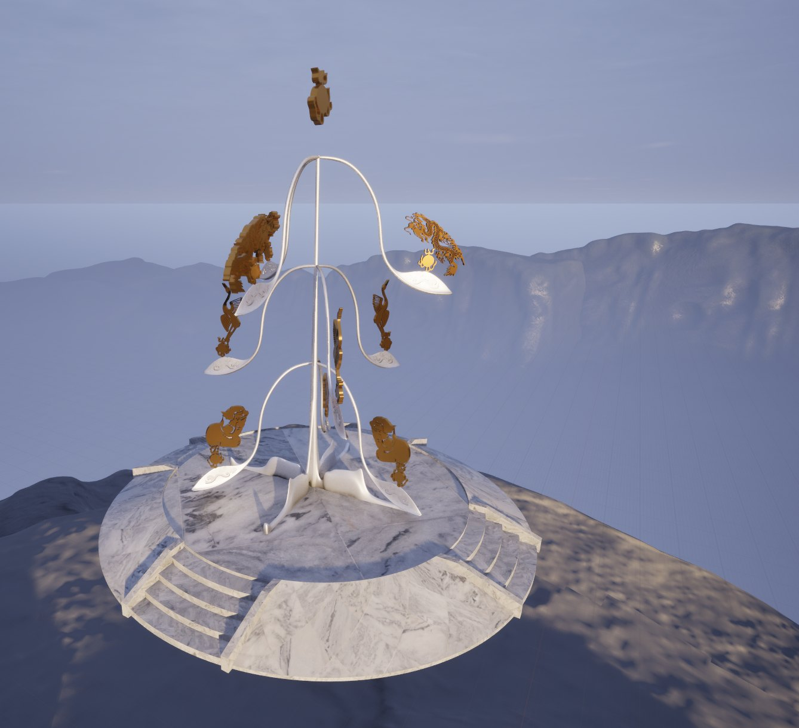
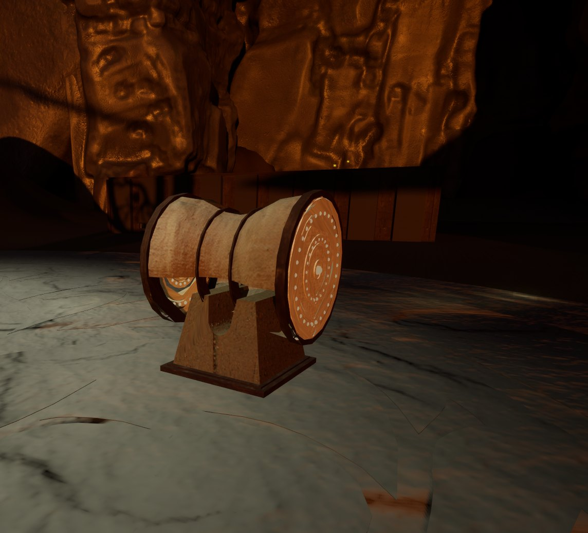
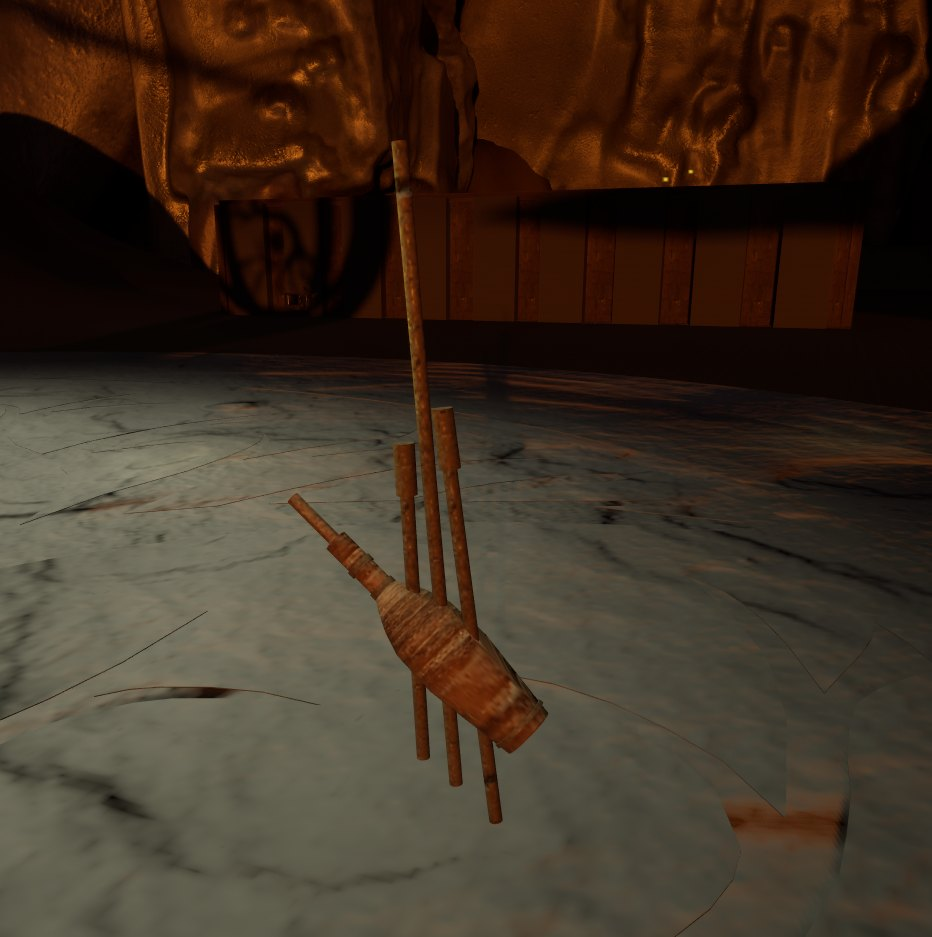
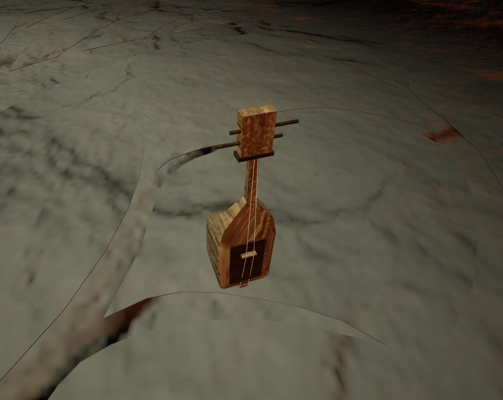
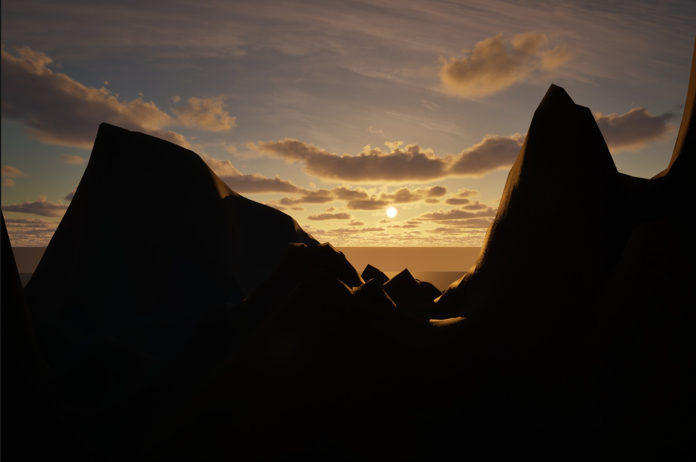
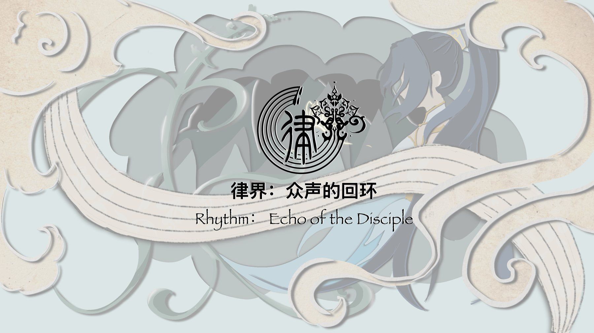

Technical art highlights
- Skies and lighting for four realms: Lumen, VSM, Ultra Dynamic Sky tuned per level
- Light as gameplay feedback, gated by progress state
- Rhythm engine on a Quartz audio clock with data-driven charts
- Level flow, save and state system connecting three puzzles
- Set dressing, in-engine materials and a build-size pass
- Producer: pipeline and hand-offs for 9 people
01Overview
Rhythm: Echo of the Disciple (律界：众声的回环) is a first-person 3D rhythm and puzzle adventure made for the Global Game Jam × WIPO "Next Great IP" Jam. You play the Silent One, the last echo of the World Tree Ruomu, travelling through realms silenced by the Resonance Collapse and waking them by playing sacred instruments of China’s ethnic-minority music traditions.
I was one of two producers, one of three developers and the team’s only technical artist. I ran the production pipeline for nine people, owned the sky, lighting and rendering of every realm, set dressed and applied materials in engine, wrote the rhythm engine and connected the puzzle levels into one playable journey.


02Production: an agile month
We had one month, nine people and six disciplines. As producer (with Kyrene Zhang) I ran it as four one-week sprints, each ending in a build everyone could play. Scope was decided by what the last playtest showed, not by the original plan, which is how a nine-realm idea became a four-realm demo that actually shipped.
Concept & IP
- IP research: which instruments, which realms
- Lore, title and art direction locked
- Grey-box Realm I, first Quartz clock test
Core loop
- Rhythm engine and first drum chart
- Puzzle prototypes for Realms II–IV
- Art and audio hand-off rules agreed
Content
- All four realms dressed and lit
- Gupiaoqin, lusheng and final charts
- Progress state, save and teleporters wire the run
Polish & ship
- Timing, hit window and lives tuned from playtests
- Lighting readability and build-size pass
- Trailer, itch.io page, WIPO submission
Because I was also the integrator, every hand-off landed on my desk first. When one broke, I changed the rule for the whole team instead of fixing a single file: music arrives with its tempo and bar count, dialogue arrives as CN / EN text fields, art arrives as meshes ready to place.
03Visuals: set dressing & materials
The art team made the hero pieces; I turned them into places. For each realm I blocked out and dressed the space, placed and scaled the instruments, statues and architecture, and applied materials in Unreal: a landscape material instance on the ground, polished marble, red granite and oxidized metal for the altars, and small gold and silver masters for the relics. Props that never move were merged into single static meshes so each room draws in a few calls instead of dozens.

The rhythm stage. The bronze-and-marble tree where each instrument trial is played: set dressed with materials applied in engine. The instruments hang from its branches until the player wakes them." width="1338" height="1219" loading="lazy">


Each instrument sits in a cave pool of warm light against a cool marble floor, so the playable object always reads as the brightest, warmest thing in frame.
04Skies & lighting
Light is the part of Rhythm I care about most: it sets each realm’s mood, and it is also how the game talks to the player. The whole project is fully dynamic (static lighting is switched off), lit with Lumen global illumination and reflections, virtual shadow maps and hardware ray tracing, so I could keep changing skies until the final hours of the jam and see the result without a bake.

One sky system, a different mood per realm
I built every realm’s sky on Ultra Dynamic Sky (sky atmosphere, sun and moon, volumetric clouds) and tuned it per level, adding GoodSky and the engine’s procedural night sky where a realm needed stars. On top of the sky, I used local lights as a gameplay language: warm means "play this", green means "correct", and a light that switches off means a stage is done.
Sky & atmosphereUltra Dynamic Sky at a low sun, exponential height fog plus local fog volumes to layer the valley, volumetric clouds catching the last light.
Light as feedbackThe World Tree gate glows as the goal; a butterfly guide carries its own light to lead the player.
Sky & atmosphereSame sky system pushed brighter and cooler, height fog for depth across the court.
Light as feedbackEvery floor tile owns a spotlight driven by a Timeline fade: holding a tile raises it to OnIntensity, a wrong step resets them all.
Sky & atmosphereNight: GoodSky sphere and procedural night sky for the star field over Ultra Dynamic Sky’s atmosphere.
Light as feedbackThe RGB puzzle is literally light mixing: red, green and blue spot units must add up to white on both sides.
Sky & atmosphereEnclosed cave, warm bounce from Lumen off the carved walls.
Light as feedbackRect lights on each tone door; the correct door plays its glow FX as the sequence advances.
Rendering setup & optimization
r.DynamicGlobalIlluminationMethod=1
r.ReflectionMethod=1Lumen GI and reflections, so skies and puzzle lights bounce correctly with no lightmaps.
r.AllowStaticLighting=FalseNo baked lighting at all: nothing to bake on a jam deadline and no lightmap textures to ship.
r.Shadow.Virtual.Enable=1Virtual shadow maps keep the long dusk shadows sharp across large realms.
r.RayTracing=TrueHardware ray tracing on for Lumen quality on capable GPUs; mesh distance fields as the fallback.
AutoExposure=False
LocalExposure contrast 0.8Fixed exposure so each realm looks exactly as I graded it; local exposure softens highlights and shadows.
AC_StateSwitchForLightsPuzzle lights are grouped by progress stage and only the current stage’s set is enabled.
SM_MERGED_*Static props merged into single meshes per room to cut draw calls.
Shipping · IoStore · Oodle Kraken 7Shipping build, compressed pak, shared material shader code, no debug files or crash reporter, English only, only referenced content cooked. Each realm is its own level loaded behind a loading screen.
05Code: the rhythm engine
Why Quartz
A rhythm game lives or dies on timing. If notes are timed with the game’s frame clock, a heavy realm that drops frames makes every note land late while the music plays on. Quartz is Unreal’s clock that runs on the audio thread: it counts bars and beats in step with the sound actually coming out of the speakers, and fires events exactly on beat boundaries. I built the rhythm engine on it:
- One clock per song. The manager creates a Quartz clock, sets it to the chart’s
BPM_Baseand time signature, and starts the music quantized to that clock, so the song and the clock start on the same sample. - Gameplay counts in beats, not seconds. On every Quartz tick the manager advances
PlayBeats. Notes, spawning and misses are all measured in beats against that value. - Only the hit window is in seconds.
HitWindowSecondsis converted withSecondsPerBeat, so a fast song and a slow song feel equally fair.
Charting with our audio artist
We didn’t auto-detect beats: every note was placed by hand. To make that workable across two people and a deadline, Katria and I agreed to speak the same language as her music software, bars and beats, instead of timestamps.
DA_Chart_SongBar · Beat · BeatFraction · LaneGlobalOffsetBeats once, never every noteWriting notes as musical positions meant that when Katria changed one bar, only that bar’s notes needed editing. Everything after it stayed in time. A note written as "bar 12, beat 3, and a half" means the same thing in her music software and in Unreal, which removed most of the back-and-forth.
// Reconstructed from the Blueprint graphs and simplified for reading.
// BP_MusicGameManager · StartMinigame(chart)
Chart = DA_Chart_Song_N // BPM_Base, BeatsPerBar, StartBar, PreRollBeats,
// ApproachBeats, GlobalOffsetBeats, HitWindowSeconds,
// LaneX_Offsets, LivesStart, MusicSound, Notes[]
Clock = Quartz.CreateNewClock("Rhythm")
Clock.SetBeatsPerMinute(Chart.BPM_Base)
Clock.SubscribeToQuantizationEvent(Beat, OnQuartzTick) // audio-thread beat events
Clock.StartClock(); PlayQuantized(Chart.MusicSound) // music starts on the clock
OnQuartzTick(): PlayBeats += 1 // game time = beats heard
SwapInputContext(IMC_Default -> IMC_Rhythm) // F G Space J K L become lanes
// every note is data: S_NoteEvent { Bar, Beat, BeatFraction, Lane }
TargetHitBeats(n) = (n.Bar - StartBar) * BeatsPerBar + n.Beat + n.BeatFraction
+ GlobalOffsetBeats
spawn note when PlayBeats >= TargetHitBeats(n) - ApproachBeats
// BP_MusicNote · Tick
alpha = clamp((PlayBeats - (TargetHitBeats - ApproachBeats)) / ApproachBeats, 0, 1)
Z = lerp(SpawnZ, HitZ, alpha) // lands on the judgement line on the beat
if PlayBeats past the window: Manager.ReportMiss() // lives - 1, UI "remaining errors"
// BP_JudgementLine · TryHit(lane)
best = overlapping note in lane with the smallest |PlayBeats - TargetHitBeats|
if best and |delta| <= HitWindowSeconds:
flash the instrument's CorrectLight, play HitSound, destroy note
The instruments share one interface (BPI_Drum), so the same judgement line drives the drum, lusheng and gupiaoqin trials, and a manager swaps in a dedicated rhythm input context for the duration of each song.
06Code: puzzles & level flow
Each realm pairs its rhythm trial with a puzzle. Oley Zhou and Kyrene Zhang led the puzzle builds; I assisted them on the logic and owned the glue that made three separate puzzles feel like one journey: a single progress state, save, and level transitions.
BP_Puzzle1Manager counts correct tiles; stand on a BP_PuzzleTile for its hold time to light it, a wrong tile resets allBP_RGB_Master validates left and right sub-puzzles; each is solved when its R, G and B units add up to whiteBP_Puzzle3Manager checks a correct sequence of pentatonic tones; hover a door to hear it, F + J chords select// BP_GI (GameInstance) owns the run
CurrentState : EGameProgressState // C0S0, C1S0..C1S2, C2S0..C2S2, C3S0..C3S2, C4S0, C4S1
SetState(s): CurrentState = s; SaveGameToSlot(BP_Save); OnStateChanged.Broadcast(s)
// AC_StateSwitch / AC_StateSwitchForLights, dropped onto any actor
VisibleInStates : [EGameProgressState]
OnStateChanged(s): for a in TargetActors:
a.SetHidden(s not in VisibleInStates); a.SetCollision(s in VisibleInStates)
// lights: only the current stage's puzzle lights are enabled
// AC_ProgressTrigger: overlap -> GI.SetState(TargetProgress)
// BP_Teleporter: fade + WBP_Loading -> OpenLevel(TargetLevelName, SpawnTag)
Because every puzzle actor just listens for a state change, a designer could place a door, light or NPC and tick which stages it appears in, without editing any puzzle Blueprint.
07IP research
The WIPO × Global Game Jam brief asked young teams for a game with franchise potential, thinking about how copyright, trademarks and design rights protect characters, music and branding from day one. I researched how successful game IPs build a world that outlives one title, and we built Rhythm around an asset no one else could claim in the same way: the living music of China’s ethnic-minority instruments.

Instruments as characters
The drum, the lusheng reed pipes and the gupiaoqin are the realms' 'bosses' and relics. Each is a designable, ownable object that can carry merchandise, collectibles and a soundtrack.
Music as the rule of the world
Every realm is sealed by silence and opened by a rhythm. The Room 4 doors use the names of the Chinese pentatonic scale (gong, shang, jue, zhi, yu), so music theory itself becomes the mechanic.
Original, protectable layers
Original chapter tracks per instrument, an original story and emblem (the World Tree Ruomu) and a distinct bilingual brand: the layers WIPO’s sessions framed as copyright and trademark.
Built to expand
The lore describes nine realms; the jam build ships four. Each new realm is a new instrument, song and puzzle on the same systems, which is how the IP grows into sequels, albums or other media.
08Challenges & solutions
Four moods, no time to bake
Each realm needed its own time of day and atmosphere, and lighting was still changing in the last hours of the jam. Baked lighting would have cost hours per change and inflated the build.
Fully dynamic Lumen and one sky system
I turned static lighting off, lit with Lumen, VSM and ray tracing, and built every realm on the same Ultra Dynamic Sky setup tuned per level. A sky change became a slider, not a rebake.
Notes drifting away from the music
Timing notes on frame time makes a rhythm game feel wrong the moment the frame rate dips, and our realms are heavy scenes.
Quartz clock and beat-space math
The engine runs on a Quartz audio-thread clock, charts are written in bars and beats with the audio artist, and only the hit window is in seconds. One offset value fixes a whole song’s feel.
Nine people, six disciplines, one build
Music, writing, art and three developers all had to land in the same Unreal project inside one month.
Weekly sprints and data hand-offs
Four one-week sprints, each ending in a shared playtest build. Songs came in with tempo and bar count, dialogue as CN / EN fields, art as ready meshes; when a hand-off broke I fixed the rule, not the file.
Three puzzles by different hands
Separate puzzle Blueprints risked three disconnected mini-games.
Shared progress state
I wired a GameInstance progress enum with save, state-switch components and teleporters, so every realm reads and advances the same journey.
A heavy download for a jam game
Players were downloading from itch.io; a bloated build loses them before the menu.
Build-size pass
Shipping config with IoStore and Oodle compression, shared shader code, no lightmaps, merged meshes, one level per realm and only referenced content cooked.